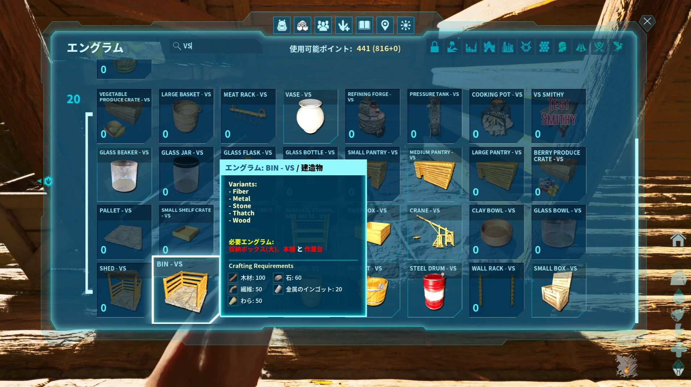
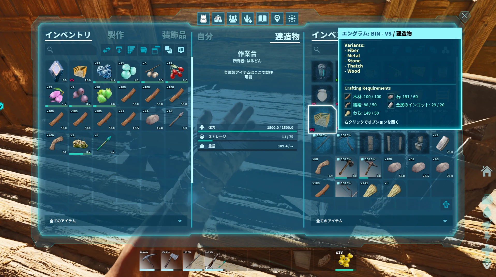
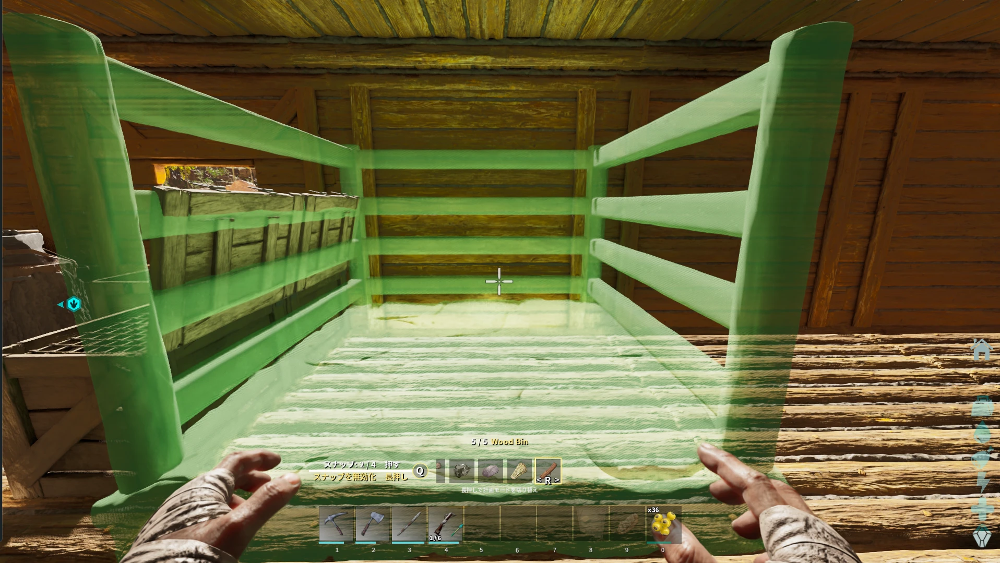
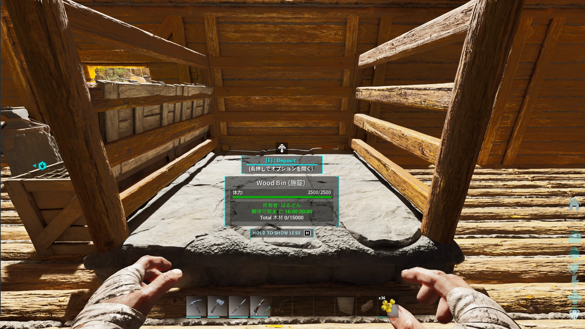
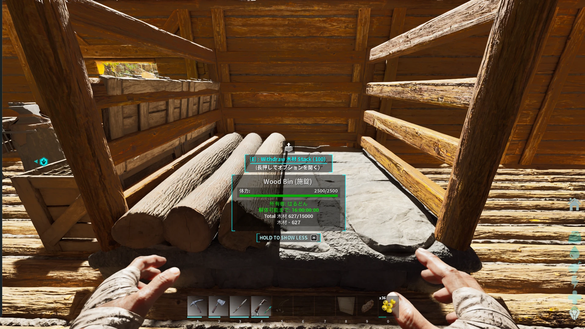
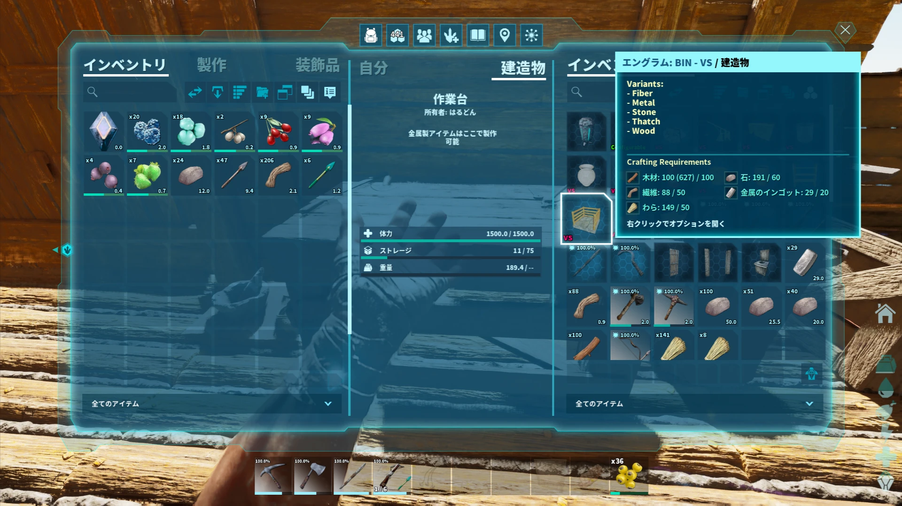
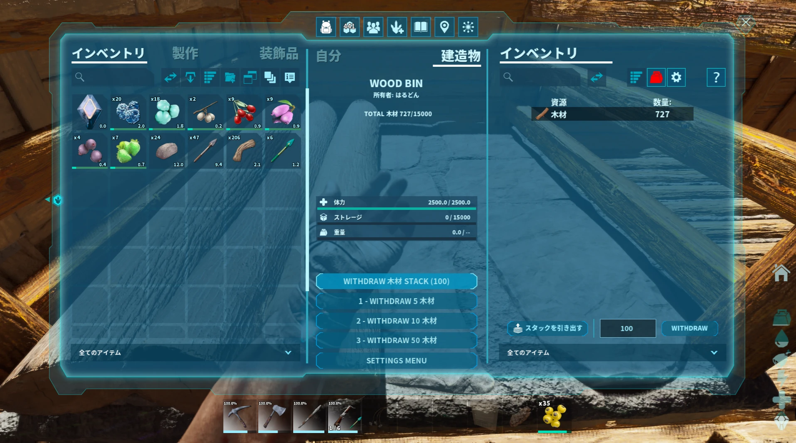

Visual Storage の使い方
Visual Storageは、資源ごとの専用収納を追加し、中に入っている量に合わせて見た目も変化する収納MODです。資源整理だけでなく、拠点内のアイテム移動やクラフトも楽にできます。
木材で覚える：習得 → 作成 → 設置 → 収納 → 取り出し
最初は「木材」を例に一連の流れを覚えるのがおすすめです。Visual Storageでは1つの収納エングラムに複数の資源バリエーションが用意されており、今回はWoodを使います。
「BIN - VS」のエングラムを習得する
エングラム画面を開き、検索欄に VS と入力して「BIN - VS」を探します。BIN - VSにはFiber・Metal・Stone・Thatch・Woodなどのバリエーションがあり、今回はWoodを使います。

BIN - VSを作る
習得したBIN - VSを選び、必要素材をそろえて作成します。WoodはBIN - VSのバリエーションの1つです。

Woodに切り替えて設置する
BIN - VSをホットバーから選び、設置プレビュー中に R でバリエーションを切り替えて Wood を選びます。Woodになっていることを確認してから、使いやすい場所に設置します。


木材を入れる
Wood用収納を開き、手持ちの木材を収納へ移します。入れた数量は収納側に保存され、中身の量に応じてVisual Storageの見た目も変化します。

収納した木材をそのままクラフトに使う
Wireless Craftingの範囲内では、Visual Storageに入っている木材をクラフト用の資源元として利用できます。対応するクラフトなら、木材を自分のインベントリや作業台へ移し直さなくても、収納されている分が資源として反映されます。製作画面では、必要素材のWoodに表示される（ ）内の数値がVisual Storageに入っている分だけ増えるので、Wireless Craftingが効いているかを確認できます。

必要な分だけ取り出す
Wood Binの中身を確認したいときは、収納に照準を合わせて F を押してインベントリを開きます。画面中央下部にある WITHDRAW ○ 木材 のボタンを押すと、表示されている数だけ木材を取り出せます。たとえば「WITHDRAW 5 木材」なら5個、「WITHDRAW 50 木材」なら50個を取り出します。WITHDRAW 木材 STACK (100) では1スタック（100個）を取り出せます。右側の数量欄に数値を入力して WITHDRAW を押せば、任意の数を指定して取り出すこともできます。

よく使う便利機能
木材で基本の流れを覚えたら、必要に応じてVisual Storageの便利機能を使えます。DropboxとCraneは少し設定が必要なので、使いたいときだけ詳細ページを見ればOKです。
Distribution
資源と収納先をリンクして、拠点内の指定した収納へまとめて振り分ける機能です。複数の収納やあふれたときの予備収納も設定できます。
Wireless Crafting
Visual Storageをクラフト用の資源元として利用する機能です。対応するクラフトでは、収納から毎回資源を持ち出して自分や作業台へ入れ直さなくても、保存されている資源を利用できます。利用できる範囲は管理者設定で変更できます。
Dropbox
持ち帰った資源をいったんDropboxへ入れ、設定したVisual Storageへまとめて振り分けます。
Crane
恐竜などから資源をまとめて降ろし、そのまま設定したVisual Storageへ振り分けます。


おすすめの使い方例
基本の流れが分かったら、拠点の規模に合わせて使う収納や便利機能を増やしていけばOKです。
覚えておくと便利
- 収納の見た目は、中に入っている資源量に合わせて変化します。
- Wireless Craftingでは、対応するクラフトからVisual Storage内の資源を利用できます。
- Wireless Craftingの範囲は管理者設定で10～100土台相当に変更できます。
- 表示量は自動だけでなく、対応する収納では手動設定もできます。
- 一部の収納は色やスタイルを変更できます。
- スタックMODやARKの基本資源を継承したカスタム資源にも対応するとされています。